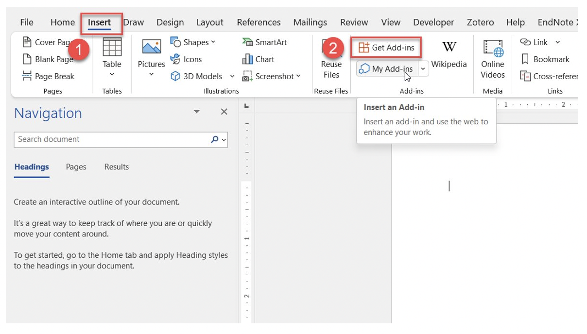
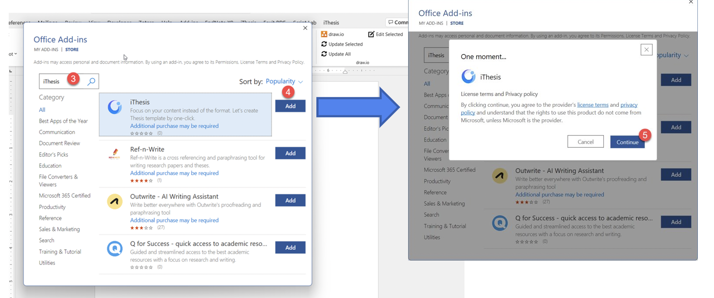
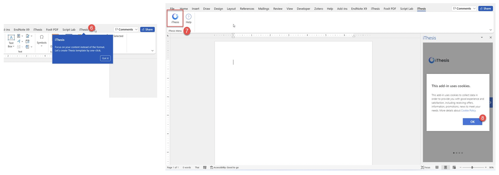
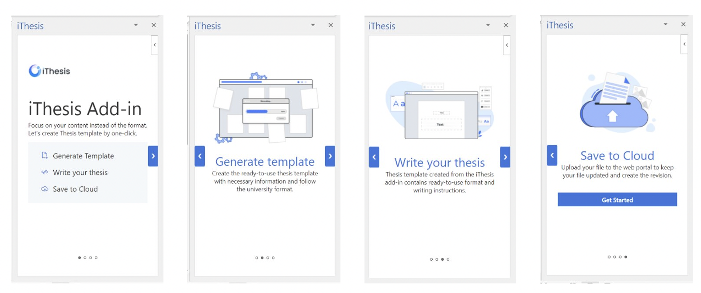

การติดตั้ง iThesis Web Add-in¶
เปิด Microsoft Word เลือกที่แถบเครื่องมือ Insert
เลือกที่ Get Add-ins
ค้นหาด้วยคำว่า iThesis
กด Add
กด Continue
แถบ iThesis จะขึ้นที่แถบเครื่องมือ พร้อมกับมี tooltip ชี้ตำแหน่งที่อยู่ ให้เลือกที่แถบดังกล่าว
กดที่ไอคอน iThesis จะปรากฏหน้าต่างทางด้านขวาของเอกสาร
กด OK เพื่อยอมรับการนโยบายส่วนบุคคลเรื่องการเก็บข้อมูลในรูปแบบ cookie (หากไม่กด ok จะไม่สามารถใช้งานได้)
จะพบกับหน้าจอแนะนำคุณสมบัติของ iThesis Web Add-in กดที่ลูกศรด้านขวาเพื่อเลื่อนไปข้างหน้า จากนั้นกด Get Started เพื่อเริ่มต้นใช้งาน
